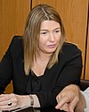
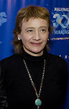
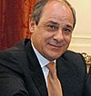

Tierra del Fuego, Antártida e Islas del Atlantico Sur
-
DESCRIPCION DE TIERRA DEL FUEGO
-
Tierra del Fuego, Antártida e Islas del Atlántico Sur, en el texto de la Constitución: Provincia de Tierra del Fuego, Antártida e Islas del Atlántico Sur, es una de las 23 provincias que conforman la República Argentina. A su vez, es uno de los 24 estados autogobernados o jurisdicciones de primer orden que conforman el país, y uno de los 24 distritos electorales legislativos nacionales.78.
Su capital es Ushuaia y su ciudad más poblada es Río Grande.
-
Está ubicada en la región patagónica, en el extremo sur de la Argentina, y ocupa un amplio territorio insular, marítimo y antártico, que se extiende desde la Isla Grande de Tierra del Fuego al polo Sur, incluyendo la isla de los Estados, las islas Malvinas, las islas del Atlántico Sur, la península Antártica, formando un triángulo cuyos lados son los meridianos 74°O y 25°O y su vértice el polo Sur.
-
En la porción americana, la provincia limita al norte con la provincia de Santa Cruz, al oeste con Chile y al sur del canal de Beagle, también con Chile. En la Antártida, la provincia también limita al oeste con Chile, aunque los límites no están establecidos. Con 1 002 445 km² es la jurisdicción de primer orden más extensa (incluidos los territorios en litigio) y con 160 720 habitantes en 2010, la menos poblada.
Con respecto a los territorios cuya soberanía se encuentra en disputa (islas Malvinas, islas Georgias del Sur, islas Sandwich del Sur, islas Orcadas del Sur, islas Shetland del Sur, Antártida Argentina), la ley de provincialización en su artículo 2 establece que corresponden al territorio de la provincia, pero «sujeta a los tratados con potencias extranjeras que celebre el gobierno federal, para cuya ratificación no será necesario consultar al gobierno provincial», norma que habilita la secesión de dichos territorios por la sola decisión del Estado nacional en el marco de las negociaciones sobre la soberanía con otras potencias.
Estaba organizada como territorio nacional hasta el 26 de abril de 1990, año en el que obtuvo la categoría de provincia a través de la sanción de la Ley Nacional N.º 23 775 del Congreso de la Nación Argentina.11
-
HISTORIA
-
La Isla Grande de Tierra del Fuego fue poblada mucho antes de la llegada de los europeos en el siglo XVI por los yámana o yaghan, también por los kaweskar mal llamados por los invasores mapuches "alacalufes" (comedores de choros, significando "choro" a bivalvos), entre fines de los siglos 15 y 16 la mayor parte de la zona llana de la isla fue ocupada por un conjunto de patagones llamados selk'nam más conocidos como onas, al parecer en el extremo sudeste de la isla la mezcla de selk'nam y mujeres de origen yámana fue originaria de la pequeña población de aush o ausch o manneken.
-
Llama mucho la atención que estos pueblos humanos pudieran sobrevivir a climas tan inclementes, en la mayor parte del año gélidos y en veranos húmedos, vestían con abrigos muy rudimentarios como la cobertura con un pellejo de guanaco , aunque tenían especial cuidado en que con pieles se cubrieran la cabeza con una especie de bonete bien abrigado, y al igual que los patagones, con abrigados calzados de piel.
-
Los yámana o yaghan solían vivir gran parte de su existencia en canoas realizadas con un solo tronco ahuecado mediante tallado y quemado, en esas canoas o, como se les llamara en su idioma, ha llamado la atención que pudieran nadar en aguas casi heladas y que casi siempre llevaran para calentarse ardientes las brazas de un fogón y se alimentaran de la abundante pesca, de focas y especialmente de ballenas encalladas en las costas. El idioma de los yámana o yagán ha llamado la atención por su enorme cantidad de vocablos en algunos casos muy complejos como por ejemplo la palabra mamihlapinatapai pero también en su vocabulario llama la atención la falta de una palabra equivalente a abuelo lo que ha sugerido que los miembros de estos pueblos tenían una vida que no superaba los 40 años.
-
Varios exploradores argentinos exploraron el territorio durante el siglo XIX el más conocido dado que fue oficial es Luis Piedrabuena quien exploró las costas atlánticas de toda la Patagonia Sur a partir de los años 1850 entrando en buenas relaciones con los jefes patagones María la Grande y el cacique Casimiro Biguá de estirpes aonikenk de los cuales los shelknam u onas eran el desprendimiento más austral y estableciendo la pequeña localidad argentina de San Juan de Salvamento en la isla de Los Estados, aunque ya antes en 1829 el francés naturalizado argentino Luis Vernet les conocía y tenía buenos tratos con ellos desde la Comandancia Militar de las Islas Malvinas que extendía su jurisdicción hacia todas las islas del Atlántico Sur e incluso, se supone, hasta todo territorio que llega al Polo Sur. Con los datos recogidos es que Roberto Payró pudo editar en 1890 su minuciosa novela documental llamada La Australia Argentina, casi al mismo tiempo el anglicano Thomas Bridges y su familia favorecieron la sedentarización de los indígenas fueguinos en Ushuaia, Bridges al principio parecía un agente inglés si bien concluyó por reconocer la soberanía argentina; también paralelamente el sacerdote católico salesiano José Fagnano nacido en Italia consolidó con sus misiones lugares que serían importantes ciudades como Río Grande, por otra parte el controvertido Julio Popper se destacó por la búsqueda de oro a fines del siglo XIX.
-
Con el tratado de 1881 y el protocolo de 1893 se estableció el límite internacional en la isla Grande de Tierra del Fuego.
-
Aunque la actividad de los Bridges y de los misioneros salesianos parece haber tenido los motivos más altruistas como el de difundir la civilización entre los indígenas que aún guerreaban entre sus distintas naciones y las ventajas de los descubrimientos recientes ocurrió una catástrofe demográfica entre los indígenas fueguinos ya que al ser reunidos en dos sitios puntuales de la isla como Ushuaia y Río Grande allí fueron diezmados por enfermedades ante las cuales carecían de defensas inmunitarias.
-
A principios de siglo XX Ushuaia se hizo célebre como sitio de destierro y penal con la Cárcel de Ushuaia a donde eran enviados presos comunes y políticos procedentes de casi todo el país o inmigrantes. La cárcel de Ushuaia fue cerrada recién a fines de los 1950. También a inicios de siglo XX comenzó la instalación argentina de la Antártida al establecerse definitivamente la base Orcadas en el año 1904 y crearse la Compañía Argentina de Pesca con sede en Grytviken. En los 1970 se decidió hacer en la isla de Tierra del Fuego un polo industrial básicamente a partir del montaje de productos electrónicos y electrodomésticos con exenciones impositivas lo cual permitió multiplicar varias veces la población con gente procedente de prácticamente toda Argentina, también desde esa época se reforzó notablemente la economía al transformarse en un centro de atracción turística mundial.
-
GOBERNADORES
| Retrato |
Gobrenador |
Inicio |
Fin |
Partido |
|
Gustavo Melella |
17 de Diciembre de 2019 |
Todavia en el cargo |
FORJA |
|
Juan Carlos Arcando |
10 de Diciembre de 2019 |
17 de Diciembre de 2019 |
PJ |
|  |
Rosana Bertone |
17 de Diciembre de 2015 |
10 de Diciembre de 2019 |
PJ |
|  |
Fabiana Rios |
17 de Diciembre de 2007 |
17 de Diciembre de 2015 |
|
|  |
Hugo Coccaro |
10 de Septiembre de 2005 |
17 de Diciembre de 2007 |
PJ |
-
LIMITES Y CLIMA
-
La Provincia de Tierra del Fuego limita al Norte con el Estrecho de Magallanes, al Este con el Mar Atlántico, y al Oeste y al Sur con Chile y el Canal Beagle.
-
Posee un clima subpolar. Sin embargo, las temperaturas en la región no son tan bajas como en latitudes similares en el Hemisferio Norte, debido al efecto moderador que ejerce la masa oceánica que la rodea.
-
ECONOMIA Y POBLACION
-
Su economía se basa en: Bosques, hidrocarburos (gas, sobre todo), ganadería, pesca, turismo, industrias, turba. Las actividades económicas en Tierra del Fuego están exentas (Ley 19.640) de los impuestos a las Ganancias al Valor Agregado. El único impuesto provincial es el de Ingresos Brutos.
-
De acuerdo al informe de estimaciones y proyecciones de población que elabora el Instituto Nacional de Estadística y Censos, al 1 de julio de este año la Provincia de Tierra del Fuego cuenta con 173.432 habitantes, de los cuales 95.881 habitan en el departamento Río Grande (que incluye a Tolhuin); 77.260 en el departamento y 283 en el departamento Antártida.
Del total estimado de habitantes, 88.412 son varones y 85.020 mujeres.
En base a estos datos, en comparación con los resultados que arrojó el censo 2010, la población fueguina se incrementó en 46.227 personas en una década, es decir que creció en un 36%.